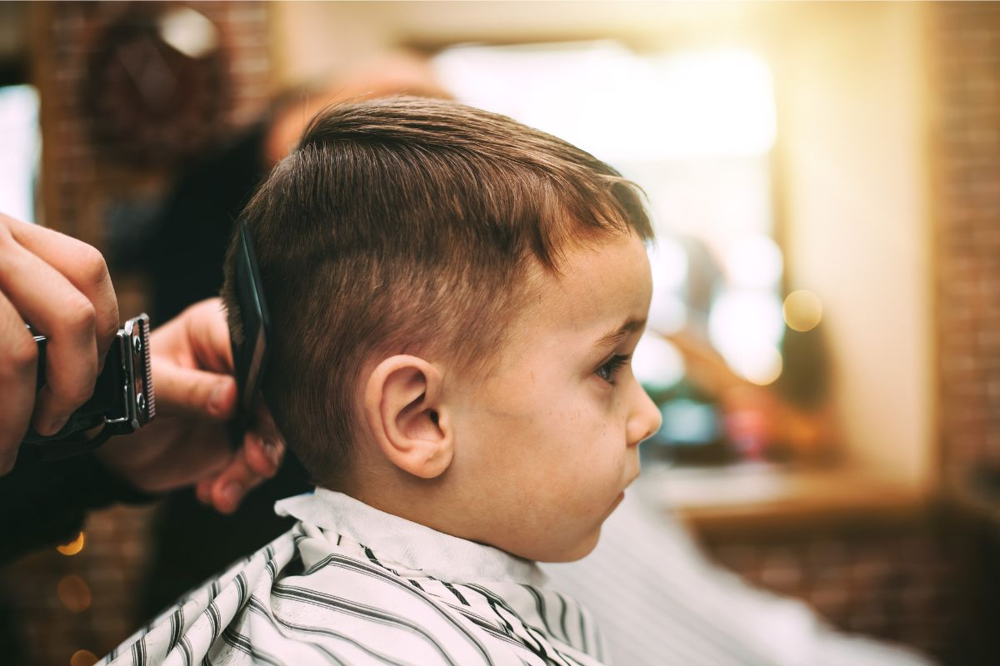
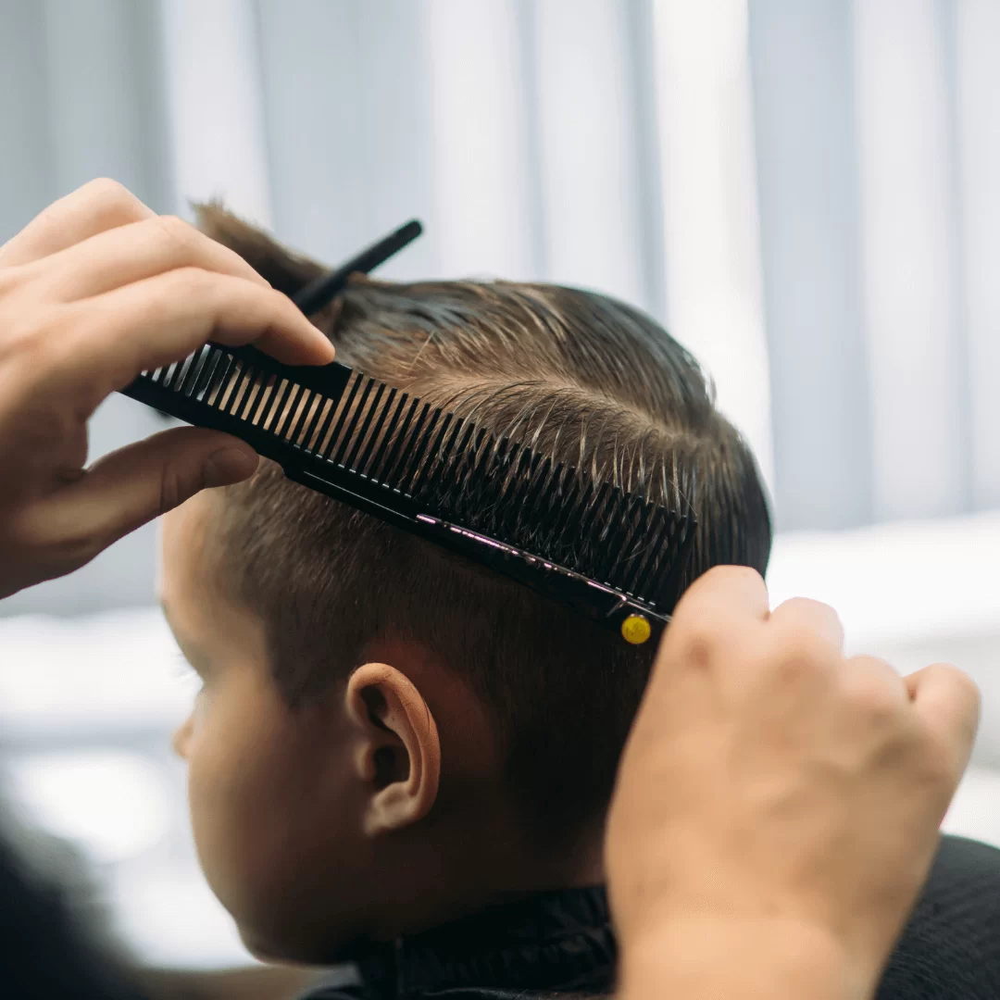

Az első gyermek hajvágás – mit várj?
Az első fodrászlátogatás sok gyereknek és szülőnek egyaránt izgalmas pillanat. Az ideges kisgyerek, az ismeretlen hangok és a mozdulatlanság kényszere mind hozzájárulhatnak a stresszhez – de a jó hír az, hogy néhány egyszerű fogással ez az élmény sokkal kellemesebbre fordítható.
A legfontosabb, hogy már otthon előkészítsd a gyerekedet. Mesélj neki arról, mi fog történni, esetleg mutass képeket, játsszátok el fodrászt – ezek a kis előkészületek sokat segítenek abban, hogy a szalonban ne érje váratlanul semmi.
Az első gyermek hajvágásnál válassz olyan fodrászatot, ahol türelmesek, nem sietnek, és ahol a kisgyerekek jól érzik magukat. Egy barátságos légkör és egy tapasztalt fodrász csodákat tehet.

Tippek a sikeres gyermek hajvágáshoz
Néhány apró trükk sokat számít, ha gyerekkel mész fodrászatba. Ezek nem bonyolult fogások – inkább olyan szokások, amelyeket érdemes kialakítani már az első alkalomtól.
Válassz jó időpontot
Ne fáradt vagy éhes gyerekkel menj – a délelőtti, kipihent időszak általában a legjobb.
Hozz kedvenc tárgyat
Egy kedvenc játék vagy könyv elvonhatja a figyelmet és megnyugtathatja a gyereket.
Maradj nyugodt
A gyerekek átveszik a szülő hangulatát – ha te nyugodt vagy, ő is könnyebben megnyugszik.
Dicsérj és jutalmazz
Egy kis jutalom a hajvágás után pozitív emléket hoz létre, és legközelebb szívesebben jön.

Milyen gyakran kell gyermek hajvágásra menni?
Ez nagyban függ a gyerek hajtípusától és a viselt frizura hosszától. Általánosságban elmondható, hogy a rendszeres vágás egészségesebb és könnyebben kezelhető hajat eredményez – és a gyerek is hamarabb megszokja a fodrászlátogatást.
- Rövid fiú frizura: 4–6 hetente ajánlott
- Közepes hosszúság: 6–8 hetente
- Hosszú haj: 8–12 hetente, de a végek rendszeres igazítása fontos
- Göndör vagy hullámos haj: az egyéni növekedési ütem alapján
Népszerű gyermek frizurák
A gyerek frizuráknak is megvannak a saját trendjei – de a legfontosabb szempont mindig az, hogy könnyen kezelhető és a gyerek személyiségéhez illő legyen. Néhány örökzöld és divatos választás:
- Klasszikus oldalsó elválasztás – rendezett, elegáns, könnyű fenntartani
- Textúrált crop – modern és laza, kevés igazítást igényel
- Rövid gépi vágás – praktikus és friss, különösen nyáron ideális
- Természetes göndör frizura – a természetes textúrát kiemelő, minimális formázással
- Undercut – oldalán rövidebb, tetején hosszabb – karakteres és trendi választás
Miért válaszd a Bosphorust gyermek hajvágáshoz?
A Bosphorus fodrászatban a gyermek hajvágás ugyanolyan figyelmet és gondosságot kap, mint a felnőtt vendégek kezelése. A fodrászok türelmesek, tapasztaltak, és pontosan tudják, hogyan kell egy kisgyerekkel bánni a szalonban.
A hangulat nyugodt és barátságos – nincs felesleges zsúfoltság, nincs sietség. Ez különösen fontos az első hajvágásnál, ahol a légkör legalább annyit számít, mint maga a vágás minősége.
- Türelmes, tapasztalt fodrászok
- Barátságos, megnyugtató szalon légkör
- Személyre szabott gyermek frizurák
- Könnyen elérhető helyszín Budapest belvárosában
Foglalj időpontot a gyermekednek
Legyen szó az első hajvágásról vagy egy rutinlátogatásról – a Bosphorus fodrászatban minden gyermek vendég különleges figyelmet kap. Foglalj most, és tedd te is kellemessé ezt az élményt.